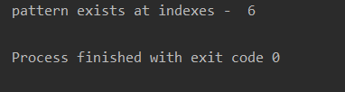
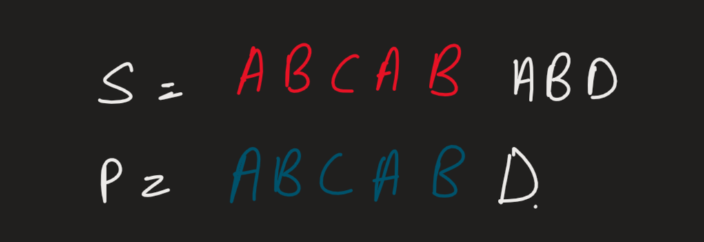
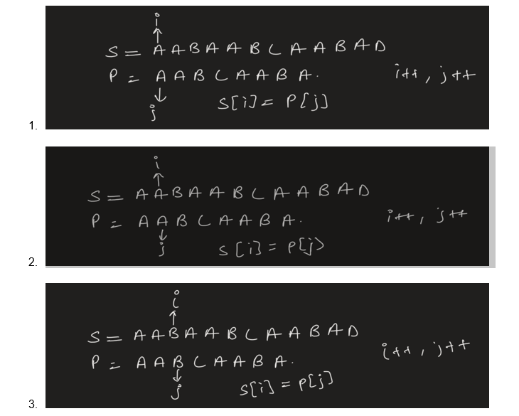
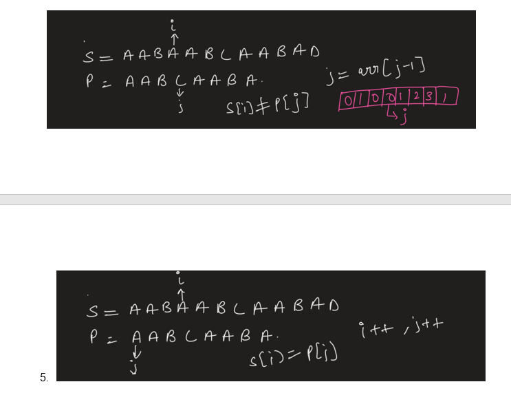
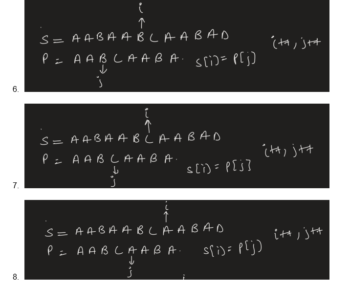
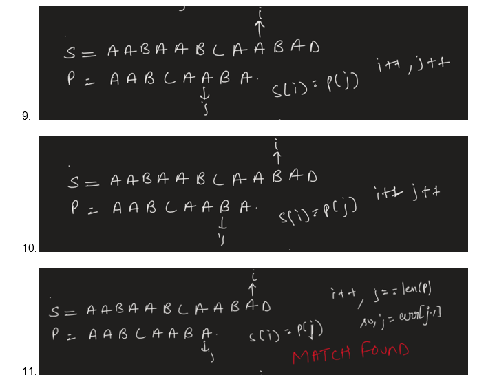
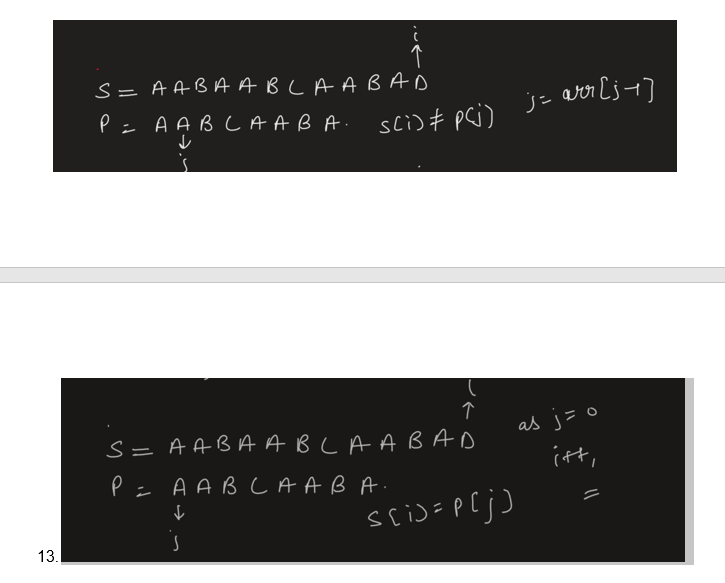
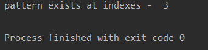

This algorithm is a pattern searching algorithm that can search a pattern in a given string in linear time complexity.
Lets first see what pattern searching means -
A = ‘ABCABCABCABCD’ // we can assume len(A)>=len(P)
P = ‘ABCD’ // pattern
So we have to find if pattern p exists in string A or not. If yes then at which index.
Output - YES pattern exists at index 9.
Okay, so this can be done easily using the Naive approach. Let’s have a look at the naive approach first.
NAIVE APPROACH :
We can go to every index of string S and can search the substring of length equal length of the pattern if its equal to the pattern or not.
Code In Python -
Output :

Time complexity -
O(len(s) * len(p)) . i.e O(n*m) where n is length of s and m is length of pattern.
KMP ALGORITHM -
KMP algorithm is based on the concept of the largest prefix which is also the suffix of the pattern. This information is very useful, We can see this via the following example -
S = ‘ABCABABD’
P = ‘ABCABD’
So here, we can see.

The first 5 characters of S and P are matching but not the 6th one.
Also if we can observe,
We can see for the prefix of pat[0:5] = ‘ABCAB’ ,
It has the ‘AB’ in prefix as well as in suffix. Which means we know the suffix is the ‘AB’ that exists in S at this position. So instead of again looking for ‘ABCABD’ for the
Next remaining string in S we can just look for ‘CABD’ if this is present in next or not.
This is what kmp algorithm does. We preprocess the largest length prefix which is also in suffix and then instead of again looking from the start we just look from after the prefix if after this prefix the remaining pattern is present here or not and using two pointer approach we can find if a pattern exists in a string or not.
Precalculating Largest prefix which is also presented in suffix:
Let see the preprocessing by an example -
P = ‘AABCAABA’
Let arr[i] gives the length of a prefix which is present in the suffix of P.
Let’s See How arr helps us in :
S = ‘AABAABCAABAD’
P = ‘’AABCAABA’
We know arr = [0,1,0,0,1,2,3,1]
    Code In Python -
OUTPUT -

TIME COMPLEXITY - O(len(pat)) for preprocessing , O(len(s)) for searching pattern in string. Hence total O(len(pat) + O(len(s))
I.e O(N+M) where M is length of pattern and N is length of String
It is highly recommended to solve below problems, they are handpicked by Programmers Army:
Practice Problems :-
• https://leetcode.com/problems/implement-strstr/
• https://www.spoj.com/problems/STRMATCH/
• https://www.spoj.com/problems/NAJPF/cstart=10
Happy Coding 😊
By Programmers Army
Contributed by: Satwik Tiwari